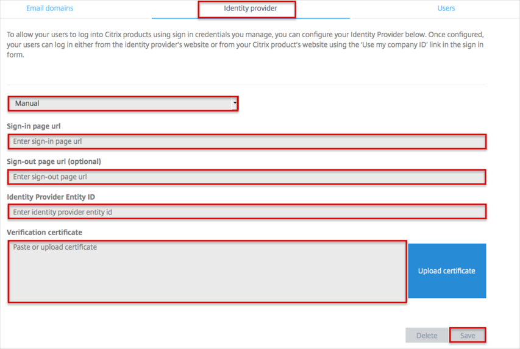

Log into the Organization Center, here: https://account.citrixonline.com/organization/administration/.
Navigate to the Identity provider tab and enter the following (see screen shot at end of step for reference):
Select Manual from the dropdown menu.
For the Sign-in page url, copy and paste the following:
Sign into the Okta Admin Dashboard to generate this variable.
The Sign-out page url is optional. Copy and paste the following URL if you need to configure single logout.
Sign into the Okta Admin Dashboard to generate this variable.
Note that if you are configuring single logout, you also need to enable single logout in Okta, see step 3, below.
For the Identity Provider Entity ID, copy and paste the following:
Sign into the Okta Admin Dashboard to generate this variable.
For the Verification certificate, copy and paste the following:
-----BEGIN CERTIFICATE----- MIIGkjCCBXqgAwIBAgIQR9a7ev1iPafwDCfR62ZJFzANBgkqhkiG9w0BAQsFADB3MQswCQYDVQQG EwJVUzEdMBsGA1UEChMUU3ltYW50ZWMgQ29ycG9yYXRpb24xHzAdBgNVBAsTFlN5bWFudGVjIFRy dXN0IE5ldHdvcmsxKDAmBgNVBAMTH1N5bWFudGVjIENsYXNzIDMgRVYgU1NMIENBIC0gRzMwHhcN MTUwNTIxMDAwMDAwWhcNMTYwNTI2MjM1OTU5WjCCARYxEzARBgsrBgEEAYI3PAIBAxMCVVMxGTAX BgsrBgEEAYI3PAIBAgwIRGVsYXdhcmUxHTAbBgNVBA8TFFByaXZhdGUgT3JnYW5pemF0aW9uMRAw DgYDVQQFEwczNzQwMDgwMQswCQYDVQQGEwJVUzEOMAwGA1UEEQwFOTMxMTcxEzARBgNVBAgMCkNh bGlmb3JuaWExDzANBgNVBAcMBkdvbGV0YTEeMBwGA1UECQwVNzQxNCBIb2xsaXN0ZXIgQXZlbnVl MRowGAYDVQQKDBFDaXRyaXggT25saW5lIExMQzETMBEGA1UECwwKT3BlcmF0aW9uczEfMB0GA1UE AwwWbG9naW4uY2l0cml4b25saW5lLmNvbTCCASIwDQYJKoZIhvcNAQEBBQADggEPADCCAQoCggEB AJkJYeVQ8/Xdue4xYIC1yYpiSx56A6AelM+ZPYXvmBtdqQQba9NfVwTbrsjyM7dSqQsGE1TGwrzy 8qoJsV9nZ0UAh4SSLcaNCCqDpX7HgPnwl0EZ6JdgjhvFjZj+ZQqEkpYFfE+SX9awhQLHA+vny6Mv k+Xh7t/myO5m/tiKeA+3escTmEoCjQxPwKD4wScAqCDJG+a4kCb/kIzuRN2iyakRPpYoO2bmiu9n TbkA4ZAl9Dgw6SxDWXX+rw8C9KmFqsfB2lGNBkMUTOXAfsNVjMOzTN1Bhm6la/mjYcou5NlyBCwk YbMmbjBOPK/boDwxaHL+bJTepGTlVWHHEAuozR0CAwEAAaOCAncwggJzMCEGA1UdEQQaMBiCFmxv Z2luLmNpdHJpeG9ubGluZS5jb20wCQYDVR0TBAIwADAOBgNVHQ8BAf8EBAMCBaAwHQYDVR0lBBYw FAYIKwYBBQUHAwEGCCsGAQUFBwMCMGYGA1UdIARfMF0wWwYLYIZIAYb4RQEHFwYwTDAjBggrBgEF BQcCARYXaHR0cHM6Ly9kLnN5bWNiLmNvbS9jcHMwJQYIKwYBBQUHAgIwGRoXaHR0cHM6Ly9kLnN5 bWNiLmNvbS9ycGEwHwYDVR0jBBgwFoAUAVmr5906C1mmZGPWzyAHV9WR52owKwYDVR0fBCQwIjAg oB6gHIYaaHR0cDovL3NyLnN5bWNiLmNvbS9zci5jcmwwVwYIKwYBBQUHAQEESzBJMB8GCCsGAQUF BzABhhNodHRwOi8vc3Iuc3ltY2QuY29tMCYGCCsGAQUFBzAChhpodHRwOi8vc3Iuc3ltY2IuY29t L3NyLmNydDCCAQMGCisGAQQB1nkCBAIEgfQEgfEA7wB2AKS5CZC0GFgUh7sTosxncAo8NZgE+Rvf uON3zQ7IDdwQAAABTXaGNUYAAAQDAEcwRQIhALV1UQuevDa2R6kljKyc+0L8we+duH+xmwSaslRk ngz+AiBvBEkAWCyG8HIW5gy6NXpkoBAnEOxXQxsioZ5ahFWD5QB1AFYUBpov18Ls0/XhvUSyPsdG drm8mRFcwO+UmFXWidDdAAABTXaGNiUAAAQDAEYwRAIgRWbCvZsC7Q2KR1pQ9TTkG6U6ddAQq6la fXjDDTm+l1wCIEX1vDWwado+3xrjNeIS/hFXPSyfJw+E3hG38pW1a+akMA0GCSqGSIb3DQEBCwUA A4IBAQCoPX1KzVtsd/0LEZNcP9G4ZC8C6RXmYZpxpz/906pRIt0+/qA1oyh8kpi5WIlaGF4QpV7s KaHeTc7vnRnlz2tIuB7MVLNf8ikoy5zkWqf164v1jciZkCW7BE3DXUxoEOT5Y/rm/9+yyTtqm+yc V30AbE02AKnhHE02uiZYD4y6rrvdf1E8ogFJhtAp51p6m/zYgWC4w+w7kbZ+/XoFIjZ8XPPRRtp4 VZktM9rNPshZY54O6iuRt0BgFmU/kC8qtw3/UIYYsdZlQWc9Shho5X79yXN1HKB8OHRz084Vqdx8 pRWzAYY5vdU3m8Erv8KUTa0DPyibFRzmnnOyoRgjU7Oa -----END CERTIFICATE-----
Click Save.

If you are configuring Single Logout, you also need to enable single logout in Okta, as follows:
Save the following certificate as citrix.cert.
-----BEGIN CERTIFICATE----- MIIGkjCCBXqgAwIBAgIQR9a7ev1iPafwDCfR62ZJFzANBgkqhkiG9w0BAQsFADB3MQswCQYDVQQG EwJVUzEdMBsGA1UEChMUU3ltYW50ZWMgQ29ycG9yYXRpb24xHzAdBgNVBAsTFlN5bWFudGVjIFRy dXN0IE5ldHdvcmsxKDAmBgNVBAMTH1N5bWFudGVjIENsYXNzIDMgRVYgU1NMIENBIC0gRzMwHhcN MTUwNTIxMDAwMDAwWhcNMTYwNTI2MjM1OTU5WjCCARYxEzARBgsrBgEEAYI3PAIBAxMCVVMxGTAX BgsrBgEEAYI3PAIBAgwIRGVsYXdhcmUxHTAbBgNVBA8TFFByaXZhdGUgT3JnYW5pemF0aW9uMRAw DgYDVQQFEwczNzQwMDgwMQswCQYDVQQGEwJVUzEOMAwGA1UEEQwFOTMxMTcxEzARBgNVBAgMCkNh bGlmb3JuaWExDzANBgNVBAcMBkdvbGV0YTEeMBwGA1UECQwVNzQxNCBIb2xsaXN0ZXIgQXZlbnVl MRowGAYDVQQKDBFDaXRyaXggT25saW5lIExMQzETMBEGA1UECwwKT3BlcmF0aW9uczEfMB0GA1UE AwwWbG9naW4uY2l0cml4b25saW5lLmNvbTCCASIwDQYJKoZIhvcNAQEBBQADggEPADCCAQoCggEB AJkJYeVQ8/Xdue4xYIC1yYpiSx56A6AelM+ZPYXvmBtdqQQba9NfVwTbrsjyM7dSqQsGE1TGwrzy 8qoJsV9nZ0UAh4SSLcaNCCqDpX7HgPnwl0EZ6JdgjhvFjZj+ZQqEkpYFfE+SX9awhQLHA+vny6Mv k+Xh7t/myO5m/tiKeA+3escTmEoCjQxPwKD4wScAqCDJG+a4kCb/kIzuRN2iyakRPpYoO2bmiu9n TbkA4ZAl9Dgw6SxDWXX+rw8C9KmFqsfB2lGNBkMUTOXAfsNVjMOzTN1Bhm6la/mjYcou5NlyBCwk YbMmbjBOPK/boDwxaHL+bJTepGTlVWHHEAuozR0CAwEAAaOCAncwggJzMCEGA1UdEQQaMBiCFmxv Z2luLmNpdHJpeG9ubGluZS5jb20wCQYDVR0TBAIwADAOBgNVHQ8BAf8EBAMCBaAwHQYDVR0lBBYw FAYIKwYBBQUHAwEGCCsGAQUFBwMCMGYGA1UdIARfMF0wWwYLYIZIAYb4RQEHFwYwTDAjBggrBgEF BQcCARYXaHR0cHM6Ly9kLnN5bWNiLmNvbS9jcHMwJQYIKwYBBQUHAgIwGRoXaHR0cHM6Ly9kLnN5 bWNiLmNvbS9ycGEwHwYDVR0jBBgwFoAUAVmr5906C1mmZGPWzyAHV9WR52owKwYDVR0fBCQwIjAg oB6gHIYaaHR0cDovL3NyLnN5bWNiLmNvbS9zci5jcmwwVwYIKwYBBQUHAQEESzBJMB8GCCsGAQUF BzABhhNodHRwOi8vc3Iuc3ltY2QuY29tMCYGCCsGAQUFBzAChhpodHRwOi8vc3Iuc3ltY2IuY29t L3NyLmNydDCCAQMGCisGAQQB1nkCBAIEgfQEgfEA7wB2AKS5CZC0GFgUh7sTosxncAo8NZgE+Rvf uON3zQ7IDdwQAAABTXaGNUYAAAQDAEcwRQIhALV1UQuevDa2R6kljKyc+0L8we+duH+xmwSaslRk ngz+AiBvBEkAWCyG8HIW5gy6NXpkoBAnEOxXQxsioZ5ahFWD5QB1AFYUBpov18Ls0/XhvUSyPsdG drm8mRFcwO+UmFXWidDdAAABTXaGNiUAAAQDAEYwRAIgRWbCvZsC7Q2KR1pQ9TTkG6U6ddAQq6la fXjDDTm+l1wCIEX1vDWwado+3xrjNeIS/hFXPSyfJw+E3hG38pW1a+akMA0GCSqGSIb3DQEBCwUA A4IBAQCoPX1KzVtsd/0LEZNcP9G4ZC8C6RXmYZpxpz/906pRIt0+/qA1oyh8kpi5WIlaGF4QpV7s KaHeTc7vnRnlz2tIuB7MVLNf8ikoy5zkWqf164v1jciZkCW7BE3DXUxoEOT5Y/rm/9+yyTtqm+yc V30AbE02AKnhHE02uiZYD4y6rrvdf1E8ogFJhtAp51p6m/zYgWC4w+w7kbZ+/XoFIjZ8XPPRRtp4 VZktM9rNPshZY54O6iuRt0BgFmU/kC8qtw3/UIYYsdZlQWc9Shho5X79yXN1HKB8OHRz084Vqdx8 pRWzAYY5vdU3m8Erv8KUTa0DPyibFRzmnnOyoRgjU7Oa -----END CERTIFICATE-----
In Okta, select the Sign On tab for the Citrix app, then:
Check the Enable Single Logout box.
Click Browse to locate the citrix.cert certificate you saved, then Upload as shown below.
Click Save.

Done!
Notes:
IdP-initiated flows, SP-initiated flows and SP-initiated SLO are supported.
Just In Time (JIT) provisioning and IdP-initiated SLO are not supported.
For SP-initiated flows:
Go to the appropriate Citrix product login page:
For GoToMeeting: https://global.gotomeeting.com/.
For GoToWebinar: https://global.gotowebinar.com/.
For GoToTraining: https://global.gototraining.com/.
For OpenVoice: https://global.openvoice.com/.
For GoToAssist (Remote Support/Service Desk/Monitoring): https://app.gotoassist.com/.
For GoToAssist (SeeIt): https://seeit.gotoassist.com/.
Click on Use my company ID

Enter your email address, then click Continue.